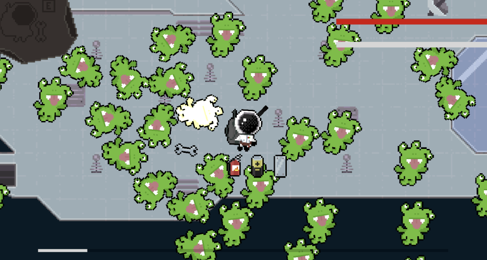

Week 5 - Prototype V1
The progress on the development of AstrOh-No! has come a far way from the last journal for week 3. Since then, the game has reached a prototype state, with start and end screen, the game is fully playable.
What We Worked On
Complete with a full tool set of a wrench, battery, fire extinguisher and metal plates, the player is able to repair broken modules, broken panels, and extinguish fires around the ship. The fire extinguisher also doubles as a form of movement, its recoil sending the player backward. In order to complete these fixes around the ship, after being alerted with an icon and visual changes, the player must complete a short minigame depending on the task at hand. Ensuring to keep the ship's health up, as well as their own. In this prototype, the player needs to avoid two threats, asteroids, which deal damage on hit and have to be outmaneuvered, and aliens, which need to be attacked with the throwing mechanic of tools to deal damage, killing them before they kill the player. Outside of the game itself, our team spent time working on documentation, as well as playtesting with numerous gamers for feedback, which we in turn will use to improve and fine tune our game for the next milestone.
Shot of Prototype V1 of AstrOh-No!
Next Steps
So in this prototype, the core loop and core mechanics are present. Our agenda for the next milestone will be to begin putting the actual game together, We will need to plan what the final ship layout will look like, how the first level will be designed, what the fixing mini games will look like, enemy types present in different areas, and so on and so forth. In short, AstrOh-No! will begin to fill the shape its traced.← Back to Weekly Blogs